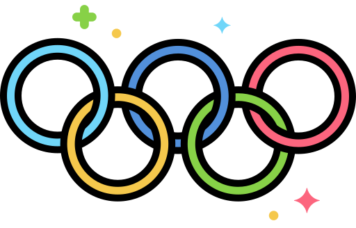

Home
Sobre
Desafios
Destaques
Medalhas
Fonte
Contato
Aqui estão as referências bibliográficas usadas no nosso site:
https://olympics.com/pt/noticias/rebeca-andrade-ouro-maior-medalhista-olimpica-brasil-paris-2024
https://ge.globo.com/olimpiadas/guia/2024/07/13/c-rebeca-andrade-idade-altura-medalhas-e-historia-da-ginasta.ghtml
https://oglobo.globo.com/esportes/olimpiadas/noticia/2024/08/05/rebeca-andrade-se-torna-maior-medalhista-olimpica-da-historia-do-brasil.ghtml
https://chatgpt.com/
Obrigada por ler a nossa matéria!!!